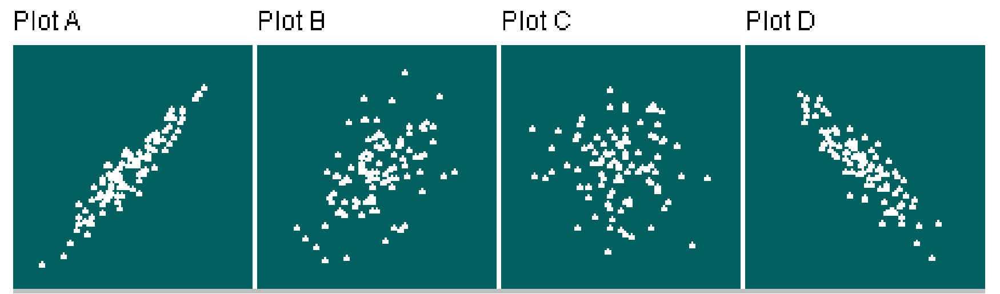

Stat 2000, Section 001, Homework Assignment 4 (15 Points)
(2/3/2017 - Due Wednesday (!) 2/8/2017 by 10:20am)
- 0) Reading: Sections 2.1, 2.2 & 2.3 (by Friday 2/10/2017)
- 1) Please work on the following textbook exercises in Moore/McCabe/Craig:
- Exercise 2.18, 2.19, 2.24, 2.25, 2.29, 2.30, 2.47, 2.48, 2.53,
2.59, 2.60, 2.66, 2.78, 2.84
Data: http://www.math.usu.edu/~symanzik/teaching/2017_stat2000/beer.xls
Data: http://www.math.usu.edu/~symanzik/teaching/2017_stat2000/statcourse8.xls
Data: http://www.math.usu.edu/~symanzik/teaching/2017_stat2000/dateheights.xls
Data: http://www.math.usu.edu/~symanzik/teaching/2017_stat2000/oasis.xls
Data: http://www.math.usu.edu/~symanzik/teaching/2017_stat2000/naepmath.xls
Whenever you have to
calculate a regression equation, also verify the computer
output by hand calculations: First use software to calculate
the two means, the two standard deviation, and the correlation.
Then, use the formulas from class and manually obtain b1 and b0.
Round your hand calculations to 2 decimal digits.
Are the computer results and your hand calculations exactly the same,
almost the same, or not identical at all? Why?
- 2) Please work on the following Chapter 1 review exercises in Moore/McCabe/Craig:
- 3) Guessing the Correlation Coefficient:
Match the four scatterplots with their correlations from the list:
-1.03, -0.99, -0.89, -0.50, -0.05, 0.50, 0.93, 1.03

Correlation for Plot A: r =
Correlation for Plot B: r =
Correlation for Plot C: r =
Correlation for Plot D: r =
Note: In each midterm and the final, you will be allowed to use a formula sheet
(1 sheet only, letter size, handwritten, text on both sides). This formula sheet can contain
all useful information such as formulas, definitions, sample calculations, and solutions
or solution outlines (from homeworks, quizzes, past exams, other Web sources, etc.).
Your name must appear in the upper right corner.
There is no need to copy tables (such as the normal table)
as those will be provided during the exams when needed.
You will be allowed to add additional information to your formula sheet for each future exam -
or you can fill up your sheet immediately and then create a completely new sheet for each future exam.
Your sheet for Midterm 1 should be related to Chapter 1 (entirely) and
Chapter 2 (Sections 2.1, 2.2 & 2.3).
Note (Final Reminder):
The same requirements hold as for Homework Assignment 1. See
http://www.math.usu.edu/~symanzik/teaching/2017_stat2000/hw01.html
for details. As warned previously, you will lose points if your homework submission is not stapled
and/or you list an incomplete name or forget your A number!